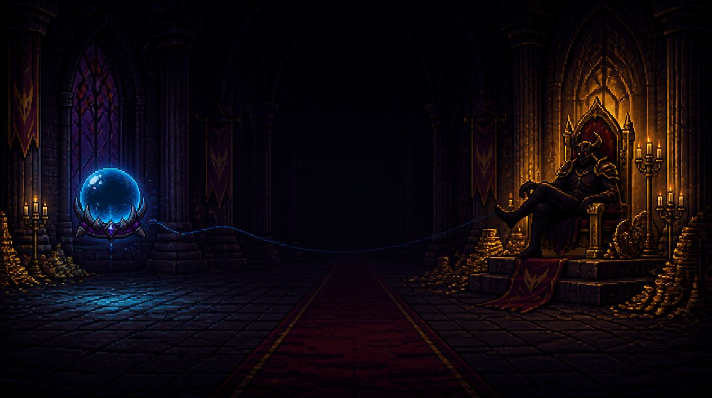
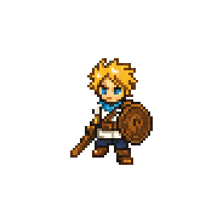
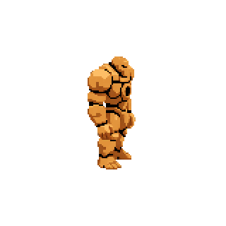
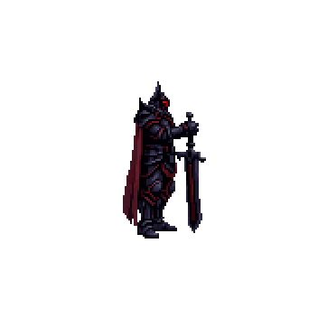
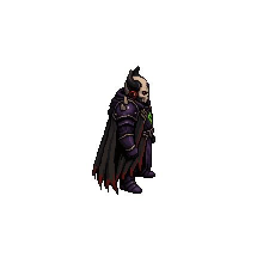
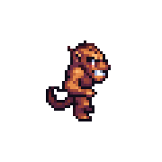
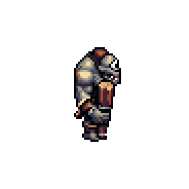
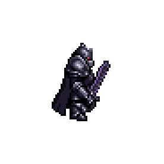
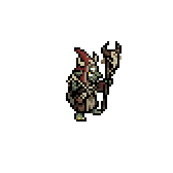

NAN 2026 사전과제 · MAOU CHANNEL
마왕 채널
파탄 난 마왕성의 마지막 수익 모델. 성문 앞의 용사를 쫓아내는 대신 방송의 주인공으로 세우고, 몬스터 웨이브로 판을 깔아 시청자를 끌어모은다.
01 · Concept
한 문장짜리 딜레마에서 출발했다
방송 콘텐츠의 재미는 결국 “저러다 죽는 거 아냐?”라는 긴장이다. 그 긴장을 시청자 수라는 숫자로 바꾸고, 플레이어에게 가해자와 보호자 역할을 동시에 맡겼다.
방송이 끝난다. 런이 종료되고 해금 요소만 남긴 채 1화부터 다시 시작한다.
아무도 안 본다. 시청자가 빠지고, 후원이 끊기고, 용사를 키울 돈이 없다.
그래서 플레이어는 두 손을 쓴다. 방송 전에는 마왕으로서 몬스터 웨이브를 편성해 용사를 궁지로 몰 판을 깔고, 방송 중에는 용사를 직접 조작해 그 판에서 살아남는다. 내가 깐 함정을 내가 아슬아슬하게 피하는 구조가 “적당히 위험한 상태를 오래 유지하라”는 목표를 자연스럽게 만든다.
모든 시스템은 이 딜레마를 키우는지로 검사했다. 시청자 요청, 후원 리듬 이벤트, 방송 사고 조건, 엔딩 분기까지 전부 “위험을 감수할 이유” 또는 “너무 멀리 가지 말아야 할 이유” 중 하나를 준다.
02 · Core Loop
편성 → 방송 → 정산 → 상점
한 판은 3화, 1회차 약 20분. 마지막 3화에서는 마왕 그림하르트가 직접 보스로 나선다. 방송 중 모은 골드가 곧 용사의 성장이고, 용사의 성장이 다음 방송에서 감당할 수 있는 위험의 크기다.
판을 깐다
에피소드 예산 안에서 몬스터를 5칸 웨이브에 배치. 15초마다 다음 웨이브가 들어오고, Space로 앞당길 수 있다.
버틴다
WASD 이동, Shift 대시, 1~4 스킬. 공격은 자동이라 조작은 전부 “어디에 서 있을지”에 집중된다.
키운다
체력·공격력·공속·이속·사거리 강화, 500G 스킬 해금(최대 4개), 고블린 상인의 프리미엄 카드.
03 · System
위험도가 시청자를 부른다
시청자 수는 매 프레임 위험도 구간별 증가율로 변한다. 위험도는 용사가 얼마나 맞았는지 하나만 본다.
D = (1 − HP비율) + 0.15 if HP비율 ≤ 15%
하락은 완만하게, 상승은 뚜렷하게. 평소(노잼)에 “계속 빠진다”는 압박감보다 “위험해지면 확 뛴다”는 보상이 먼저 느껴지도록 비대칭으로 잡았다.
“머릿수”에서 “맞은 만큼”으로 — 위험도 정의를 바꾼 이유
초기 위험도는 HP와 근접 몬스터 수(가중치 40%)를 섞어 계산했다. 플레이테스트에서 “쉬운 몹이 많이 몰려도 위험도가 오르는 게 도움이 안 된다”는 피드백이 나왔다. 슬라임 떼로 화면을 채우면 실제로는 안전한데 시청자만 올라가는, 딜레마를 우회하는 전략이 생긴 것이다.
그래서 위험도를 “용사가 지금 얼마나 깎였는가” 하나로 단순화했다. 약한 몹을 아무리 세워도 안 맞으면 시청자는 오르지 않는다. 대신 HP 15% 이하를 버티는 동안엔 +0.15 보너스로 한 티어 위로 밀어 올려, “벼랑끝에서 버티기”를 가장 보상이 큰 플레이로 만들었다.
시청자 수가 “살아 있게” 보이도록
증가율만 적용하면 곡선이 너무 매끈해 방송처럼 보이지 않는다. 프레임마다 독립 난수를 더하면 미세한 떨림만 생긴다. 그래서 0으로 천천히 되돌아오는 랜덤워크(drift)를 증가율에 얹었다. “한참 잘 늘다가 갑자기 빠지는” 실제 방송의 리듬이 나오고, 상한(±5%p)을 둬서 티어 효과를 덮지 않게 했다.
04 · Economy
후원 — 시청자를 돈으로 바꾸는 파이프
후원이 터지면 전투가 잠시 멈추고 카드를 고른다. 그래서 빈도가 곧 템포다. 너무 잦으면 전투가 끊기고, 너무 드물면 성장이 막힌다.
금액 = 12 · 시청자0.6 · U(0.5, 1.7) // 8% 확률로 ×5 “대박 후원” → 리듬 이벤트
금액 = clamp(금액, 가장 싼 강화가 × 20%, 가장 비싼 강화가 × 150%)
로그로 누른 빈도
시청자가 100배 늘어도 간격은 12초 줄 뿐이다. 후반 폭주를 막고, 초반에도 25초마다는 반드시 온다.
강화 가격에 묶은 금액
순수 공식만 쓰면 초반엔 아무것도 못 사고 후반엔 한 방에 다 산다. 상·하한을 현재 강화 가격에 연동해 “후원 1번 = 의미 있는 선택 1번”을 유지했다.
대박 후원 = 리듬 게임
QWER 4레인 노트. Perfect ±60ms · Good ±140ms. ALL PERFECT면 고급 카드와 추가 골드, Miss 과반이면 시청자 −5%.
후원 효과음도 절대 금액이 아니라 “지금 이걸로 뭘 살 수 있나”로 small · middle · big을 나눴다. 가장 싼 강화도 못 사면 small, 가장 비싼 것까지 사면 big. 레벨이 올라도 소리가 주는 기대치가 어긋나지 않는다.
05 · Pressure
“지금 뭘 해야 하지?”를 만드는 장치들
시청자 요청
방송 12초 뒤 첫 요청, 이후 22초 간격으로 채팅에 미션이 뜬다. 성공하면 시청자 ×1.35, 실패하면 ×0.85. 목표치는 용사 전투력에 로그 스케일(2배당 +50%)로 붙어서 후반 강화에도 폭주하지 않는다.
처음엔 “특정 몬스터 소환해줘”, “보스만 노려” 같은 요청도 있었다. 웨이브 편성 시스템으로 바뀌면서 원하는 시점에 소환할 수 없게 됐고, 보스전엔 소환이 막혀 의미가 없어졌다. 그래서 요청을 처치 수와 콤보 두 종류로 줄이고 제한시간도 약 40% 줄였다. 규칙이 바뀌면 그 규칙에 기대던 콘텐츠도 같이 정리한다.
방송 사고 — 두 번째 게임 오버
용사 사망 말고도 방송이 끝나는 길을 하나 더 뒀다. 너무 안전하게만 하면 진다.
| 시청자 | 상태 | 연출 |
|---|---|---|
| ≤ 5 | 경고 | 화면 흔들림, 시청자 수 주황색 |
| ≤ 1 | 위기 | 10초 카운트다운 시작 |
| ≥ 2 | 탈출 | 카운트다운 해제 (1명 진입 / 2명 탈출의 히스테리시스) |
| 10초 경과 | 방송 폐지 | 런 종료 |
판정은 반드시 화면에 보이는 숫자(내림)와 같은 기준으로 했다. 5.4명은 플레이어에게 “5명”으로 보이는데 실수로 비교하면 “5명인데 경고가 안 뜬다”가 된다. 작은 불일치가 규칙에 대한 신뢰를 깎는다.
06 · Progression
진행 구조와 엔딩 분기
각 화는 목표 골드 달성 → 보스 등장 → 보스 격파의 2단계 승리 조건을 가진다. 시간 제한은 없다. 대신 시청자의 하한과 상한이 목표 골드에 비례해 화마다 커진다. 어려운 화일수록 후원 규모도 같이 키워서 “목표만 커지고 수입은 그대로”인 벽을 없앴다.
| 화 | 목표 골드 | 보스 | 보스 HP | 시작 시청자 하한 | 시청자 소프트캡 |
|---|---|---|---|---|---|
| 1화 | 1,000G | 사르가스 | 550 | 12 | 5,000 |
| 2화 | 3,000G | 베르하르트 | 750 | 36 | 15,000 |
| 3화 | 5,000G | 그림하르트 | 1,300 | 60 | 25,000 |
시청자 소프트캡은 “1화에서 9만 명이 넘는 건 말이 안 된다”는 피드백으로 추가했다. 상한에 가까워질수록 상승률을 깎는다.




엔딩: 너무 약해도, 너무 강해도 안 된다
엔딩은 3화 클리어 시점의 용사 최대 HP ÷ 목표 HP(900)로 갈린다. 육성 단계에도 “적당히”의 딜레마를 넣은 것이다. 그냥 모든 걸 강화하면 방송이 싱거워지고, 결국 히든 엔딩의 웃음으로 끝난다.
BAD — “싱겁네요”
용사가 너무 약했다. 마왕은 이겼지만 아무도 보지 않았다.
BEST — “전설의 방송”
마왕은 쓰러졌다. 동시 접속자 신기록과 함께.
HIDDEN — “1분 컷”
용사가 너무 강했다. 마왕 즉사. 클립 하나만 남기고 채널은 전설이 됐다.
07 · Wave Design
몬스터는 역할로 설계했다
편성 단계의 선택이 의미 있으려면 몬스터마다 용사를 위협하는 방식이 달라야 한다. 스탯보다 역할을 먼저 정하고, 예산(cost)으로 조합의 폭을 제한했다.
| 역할 | 대표 몬스터 | HP | 비용 | 용사에게 주는 문제 |
|---|---|---|---|---|
| 물량 | 슬라임 · 임프 · 좀비 | 20–60 | 1–3 | 포위. 이동 경로를 막는다 |
| 원거리 | 고블린 궁수 · 저격 고블린 | 15–18 | 2–4 | 사거리 520의 저격. 멈춰 있으면 맞는다 |
| 탱커 | 사이클롭스 · 바위 거북 · 정예 기사 | 90–300 | 4–8 | 시간을 잡아먹어 다른 위협을 쌓이게 한다 |
| 버퍼 | 고블린 주술사 | 40 | 5 | 반경 160 내 공격 ×1.35 · 속도 ×1.25. 우선순위 판단을 강요 |
| 자폭 | 폭탄 박쥐 | 10 | 3 | 피해 20의 순간 폭발. 대시 타이밍 시험 |
| 분열 | 분열 슬라임 | 34 | 3 | 죽이면 슬라임 2마리. 처치가 곧 위험 증가 |




08 · Iteration
밸런싱 로그 — 피드백이 숫자가 되기까지
수치는 전부 한 파일(formulas.ts)과 데이터 테이블에 모으고, 조정할 때마다 날짜 · 피드백 원문 · 변경 전후 값을
주석으로 남겼다. 2주 동안의 주요 변경을 추렸다.
-
07.30
시청자 증감률 비대칭 조정
하락 폭은 줄이고 상승 폭은 벌렸다. 평소에 “계속 하락세”로 느껴지는 압박을 덜고 위험의 보상을 키웠다.
-
07.31
흡혈 0.2 → 0.12 · 강화 배율 하향 · 사거리 상한 추가
흡혈이 과하다
배율 구조상 작은 델타도 체감 난이도를 크게 꺾었다. 업그레이드·카드·특성이 모두 사거리를 건드려 무상한이면 위험 자체가 사라졌다.
-
08.03
강화 추가 25~30% 하향 · 고등급 카드 확률 하향 · 시청자 소프트캡 도입
여전히 세다 / 1화에서 9만 명은 말이 안 된다
시청자 상한을 목표 골드에 비례하는 소프트캡으로 넣어 1화 5,000명 · 3화 25,000명 스케일을 만들었다.
-
08.07
위험도 공식 개편 — 몬스터 머릿수 제거
쉬운 몹이 많이 몰려도 위험도가 오르는 게 도움이 안 된다
위험도 = 순수 HP 손실 + 벼랑끝 보너스. 보스전 중엔 소환과 요청을 막아 보스에 집중하게 했다.
-
08.03 → 08.10
후원 간격: 25–10초 → 30–15초 → 20–10초 → 25–12초
너무 잦다 → 밸런스가 어렵다, 더 자주 → 확률이 너무 높다
일주일 사이 세 번 왕복했다. 간격 공식의 상·하한과 기울기를 knob 두 개(40, 6)로 분리해둔 덕에 매번 한 줄 수정으로 끝났고, 결국 “초반은 느리게, 대형 방송은 빠르게”라는 로그 곡선 모양은 유지한 채 폭만 조정하는 쪽으로 수렴했다.
-
08.10
시청자 요청 극단적 단순화 · 보스 패턴 가독성 조정
요청은 처치·콤보만 남기고 시간을 약 40% 단축. 보스 탄막은 “수를 늘려달라”, “더 촘촘하게” 피드백에 맞춰 발사 수와 간격을 조정했다.
09 · AI Workflow
AI는 개발 과정에만, 게임 안에는 없다
플레이 중 AI 추론은 하지 않는다. 시청자 채팅·닉네임·몬스터 AI는 전부 결정론적 규칙과 난수다. 대신 기획서와 코드 사이에 AI를 뒀다.
| 영역 | AI | 도구 |
|---|---|---|
| 게임 런타임 | 사용 안 함 | 결정론적 규칙 + 난수 |
| GDD ↔ 코드 동기화 | 사용 | Claude Code + Notion API 커스텀 스킬 |
| 이슈 → 수정 → PR | 사용 | Claude Code + GitHub CLI 커스텀 스킬 |
| 캐릭터 · 몬스터 스프라이트 | 사용 | PixelLab.ai + Claude가 쓴 캐릭터 디스크립션 |
| 컷씬 영상 | 사용 | Higgsfield · GPT Image 2 · Seedance 2.0 |
| BGM / 후원 효과음 | 사용 | Suno AI / ElevenLabs |
GDD의 수치 표와 코드의 상수를 양방향으로 맞추는 스킬을 만들어, “기획서에는 3,000G인데 게임은 2,500G” 같은 어긋남을 없앴다. 판단(무엇을 바꿀지)은 사람이, 실행(문서와 코드 반영)은 에이전트가 맡도록 분리했다.
10 · Play
직접 플레이해보기
Chrome 권장 · 1280×720 이상. 1화만 해봐도 코어 루프를 한 바퀴 볼 수 있다.
| 입력 | 동작 |
|---|---|
W A S D | 용사 이동 (공격은 자동) |
Shift | 대시 (짧은 무적) |
1–4 | 스킬 |
Space | 다음 웨이브 즉시 호출 |
Q W E R | 후원 리듬 노트 |
11 · Retrospective
회고
잘 된 것
- 딜레마를 공식으로 옮긴 것. “위험해야 본다”를 위험도→증가율 표 하나로 만들자, 이후의 모든 기능(요청·후원·엔딩)이 그 표를 기준으로 판단됐다.
- knob을 한 곳에 모은 것. 후원 간격이 일주일에 세 번 뒤집혔지만 매번 한 줄 수정과 한 줄 주석으로 끝났다.
다시 한다면
- 피드백을 받기 전에 목표 지표를 먼저 정한다. “후원이 너무 잦다/드물다”가 왕복한 건 “1화에 후원 몇 번”이라는 목표 숫자가 없었기 때문이다.
- 우회 전략을 먼저 찾는다. 머릿수 기반 위험도의 허점은 플레이테스트에서야 드러났다. 설계 단계에서 “가장 쉬운 최적해”를 먼저 찾아보는 습관을 들이고 있다.